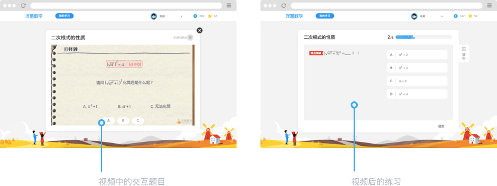
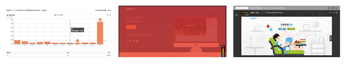

洋葱数学是一款以学习者为中心的深度在线学习产品。这个产品的背后是一群怀揣教育理想的青年，希望推动教育创新，促进教育公平。我们希望通过这个产品实现愿景：让更多学生接触到优质的教育资源，享受到个性化的教学。
学习历来被当作一件苦差事，需要你投入大量时间和精力，如果不得法还收效甚微。如何驱动学生在数字化学习环境中投入时间并取得成效，是设计学习体验时面临的挑战。为解决这些挑战，作为产品团队的初期唯一的UX设计师，我努力将学习体验塑造成一件轻松、引人入胜的事，学生乐于参与其中，甚至学到上瘾。
打造学习体验
课程结构是学生开始学习时最先看到的，它引导学生发现学什么并指引学生在课程间移动。我综合教学理念、知识划分等信息，尝试了多种课程展示方案。最终方案是带有趣味性的方案。每个知识点被打包成学习单元，这样每完成一个都是小成就。知识点路径排布如同地图一般，学习者很容易对自己的学习进度有全局观。
开始一个知识点的学习后，学生将看到被精炼成了易于咀嚼的小段视频。即便你精力有限，也能利用碎片时间学习，甚至是移动中学习。学习不再是负担，而是一次一次微小的进步。
学习者需要感觉学到了东西，并评价自己的掌握程度。因此反馈也非常重要。视频中间插入的互动性题目，把被动的看视频学习，转变为主动的即时运用刚学的内容。视频学习后紧接着的练习，进一步帮助巩固知识点，并且判断学生的掌握程度。

洋葱数学的核心用户群青少年，容易受到产品外观的影响。适宜的产品形象既可以留下良好的第一印象，也能够提升使用时的情感感受，加大他们留存下来的机会。因此在视觉设计上，我们使用明快的颜色、圆润的外观，帮助塑造出亲和的产品形象。

不断打磨
我们希望，更多发现洋葱数学的用户喜欢并留下来，留下来的能保持一定强度的学习，把洋葱数学融入日常。这需要不断打磨现有的学习体验，这时数据会提示我们一些优化的方向。我持续关注转化率、留存率、学习数据等核心数据的变化，同时参照关键流程的热力图、录屏，验证关于如何优化的假设。 
我假设如果学生在使用初期更好地理解洋葱数学的学习模式，就更可能转化与留存。因此我设计了简化而流畅的初次使用引导。通过收集学生的年级和教材信息，课程结构会调整匹配不同的学生，更符合学生自己的学习经验。学生还能从使用引导中，了解到如何更好的利用洋葱数学。
为了增加学习的粘性，尝试引入每周目标和积分系统。每周目标是为了让学生自己设定目标，做出承诺，从而在长期使用中体会到学习和进步的正循环，产生内生动力；积分和排行榜利用和同伴的对比增加学生的外源动力。

回顾
在创业团队的这段时间给予我很多宝贵的经验。我得以在产品生命周期中实践精益法则，有试错也有学习。对产品的Ownership促使自己拓展各种能力应对随时而来的问题，也从同行的伙伴身上学到了很多新鲜的思维和方法。